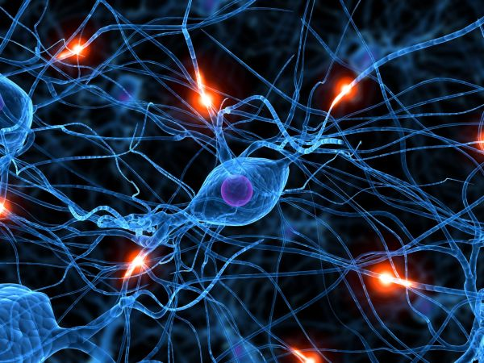

La CLID es una unidad dinámica, multidisciplinaria e intercultural de articulación entre la universidad y el sector productivo, orientada a la coproducción de bienes y servicios novedosos con alto grado de conocimiento, en procura del escalamiento en lo económico, social, ético y organizacional, a favor del bienestar de la ciudadanía.

al desarrollo del país
una cultura innovadora en el territorio
proyectos de innovación sostenible
escenarios futuribles
la creatividad desde FACES
la productividad organizacional
una red de constructores del desarrollo
el aprendizaje compartido
las cadenas de valor
el territorio con estrategias vanguardistas
a la comunidad universitaria
el modelo de educación tradicional universitaria